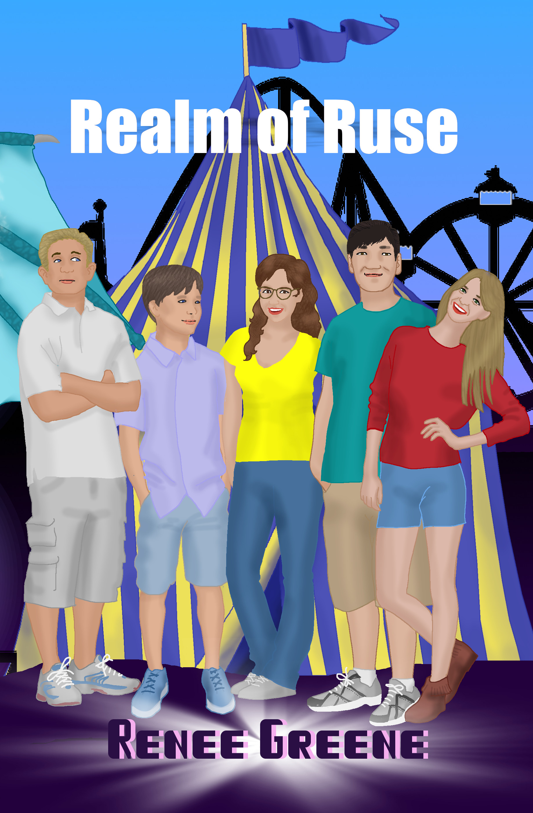
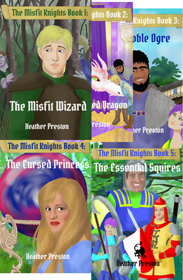
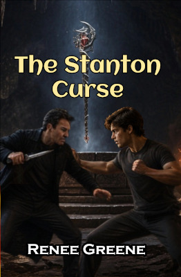
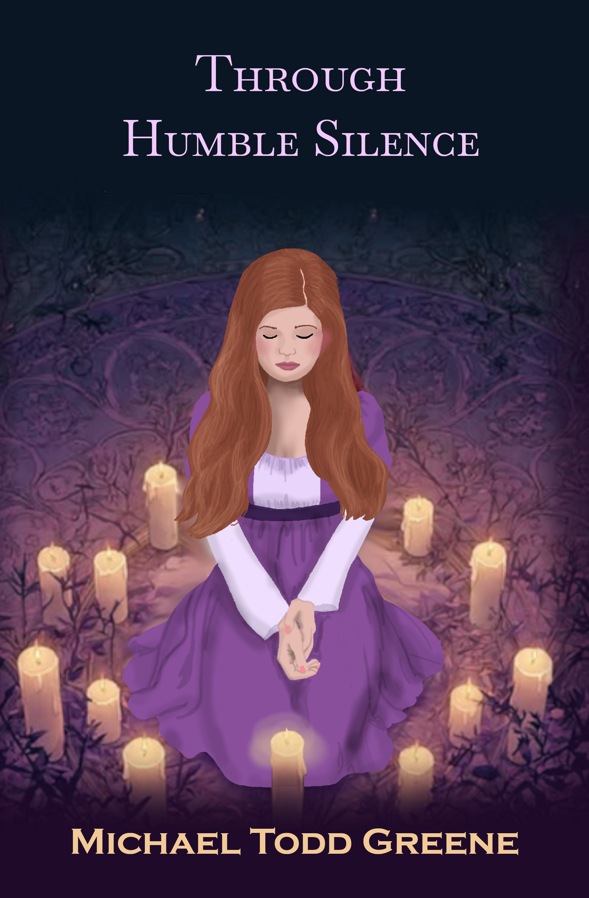
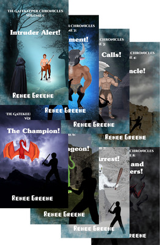
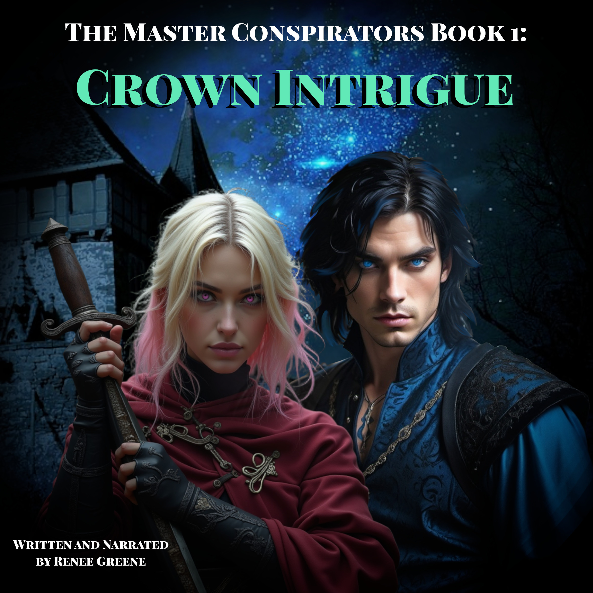

When some young teens get trapped in a room at a carnival full of costumes, they find there is a world beyond the room, and they must escape the trouble there to be able to escape from the room. The book is written for preteens and middle-schoolers, but it's intriguing enough for adults to enjoy too.

A great adventure in eight short books, but they're great for adults to read as younger readers. Each reads quickly, and none wil disappoint. These are not your normal young readers. The plot moves at a great pace, the characters are amazing. Dor, who is destined to be a wizard but has no magic, must help Wren, who is cursed to randomly change into different animals. The adventure is zany at times, intense at times, and always entertaining.

Mark Stanton has problems. Both he and his sister are cursed with uncontrollable emotions, his anger, and hers passion. No one believes there is an ancient wizard trying to kill them either, so Mark has to figure out how to defeat the wizard and break the curse on his own, for him, his sister, and his cousins. It's a short novel, but a great story for younger readers and adults who want something quick to read.

Humble Silence is only 35,000 words, so it reads quickly, but it's a touching fairy-tale style story of a girl who goes through great sacrifices to help break a curse on six princes who she sees as brothers.

This series is written in short books, and made for pre-teen, but it has a plot, characters, and love story teens and adults can enjoy too. The Gates are the keepers of the Gates, portals to other worlds, and through them, they have many adventures.

Busy? Listen to audiobooks while you are driving, exercising, cleaning,... Audiobooks are great for busy people, and we have many. Check out our audiobooks and make some of those tasks that are keeping you busy much more exciting!